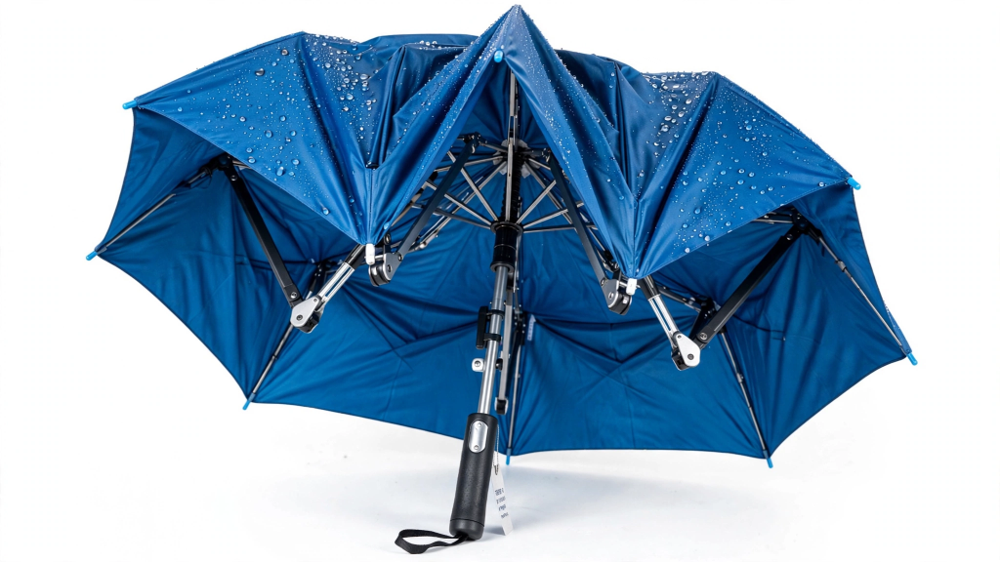
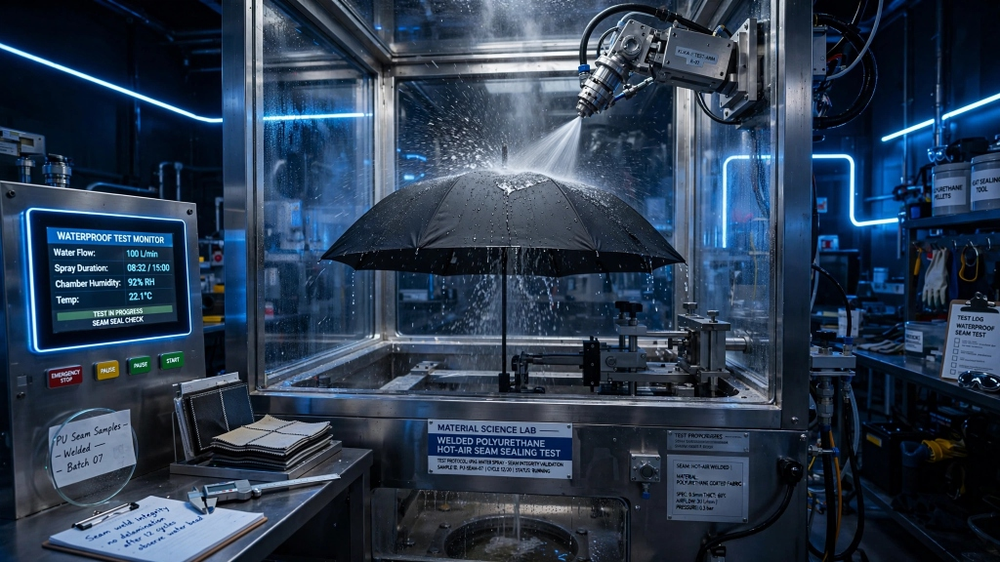
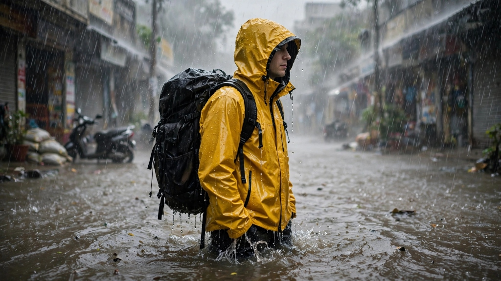

Severe weather aerodynamics, hydrostatic membrane science, and real-world urban commuting strategies from our wind tunnel engineers and coastal test crews.
Lead Editorial
Run #14 Telemetry Brief
Lab Data Sheet
Wind Tunnel Stress Analysis
Aerodynamic boundary layer telemetry measured during sustained 85 km/h cyclonic gale runs.
Peak Wind Vel.
85 km/h
Force 9 Gale squall
Rib Deflection
48° Flex
Zero permanent bend
Canopy Inversion
0.0%
Across 3,000 cycles
Lotus Nano Repel
> 150°
Water contact angle
"Stiff metal frames snap because they resist force rigidly. Memory-tempered fiberglass flexes and sheds wind pressure harmlessly."
Aerodynamics & Structural•Oct 10, 2026•7 min read
Aeroelastic Rib Flexing: How We Engineered Umbrellas for 85 km/h Coastal Gale Vortices
Conventional umbrellas snap because stiff aluminum cannot dissipate dynamic gust energy. Discover how memory-tempered fiberglass tension loops absorb sudden cyclonic updrafts without flipping inside out.
✓ Dual-canopy pressure release vents
✓ 3,000-cycle high-speed fatigue testing
✓ 9-rib radial stress distribution
✓ Dielectric non-metallic lightning safety
Dr. Arvind Patel
Lead Aeroelastic Engineer
Latest Field Notes & Guides
Technical specifications, maintenance protocols, and commuter test results.
Showing 6 Dispatches

Innovation
5 min read
Kinematic Design
Why Inverted Folding Keeps Car Interiors Dry During Downpours
Standard umbrellas trap water against your clothes the moment they are folded shut. Discover the reverse mechanical linkages that trap water inside a dry cocoon when slipping into car doors.
Rahul Verma

Material Science
6 min read
Welded Polyurethane
Hot-Air Seam Sealing: Why Stitched Needles Leak and How Polyurethane Tape Fixes It
Every sewing needle creates thousands of microscopic holes in waterproof fabric. Discover how our triple-barrier hot-air welded thermoplastic seam tape creates a 100% molecular seal against driving monsoon rain.
Dr. K. N. Sunder

Material Science
6 min read
Fabric Hydrostatics
25,000mm Hydrostatic Head: What Waterproof Column Ratings Mean
Most commercial rain jackets leak at 5,000mm during driving rains. Here is how microporous ePTFE dual-laminate membranes withstand hydraulic cloudburst pressure without trapping internal body perspiration.
Petrochemical PVC boots become brittle in cold rainwater. Examine how sulfur-heat vulcanization bonds sustainably-harvested tree rubber into seamless, 100% waterproof boots that flex indefinitely.
Vikram Malhotra
Commuter Guide
5 min read
Urban Strategies
Surviving The Monsoon Transit Rush: 7 Strategies for Trains & Metros
Stepping onto packed public transit with soaked outerwear ruins clothes and laptops. Our commuter team shares tested protocols for quick drip-shedding, compact stowing, and rapid ventilation.
Sneha Kulkarni
Care & Longevity
5 min read
Maintenance Protocol
Caring for DWR Nano-Coatings: Keeping Water Beading Season After Season
When raindrops stop beading and start soaking into the surface, your garment hasn't failed—its hydrophobic polymers just need heat reactivation. Follow our lab protocol to restore factory water-shedding.
Debashis Roy
🔍
No journal articles match your query
Try searching for broader terms like "wind", "boots", "raincoats", or reset your filters.
🌪️ Commuter Best Practices
Urban Monsoon Commuter Field Protocols
Tested techniques from our storm laboratory to navigate torrential wind, crowded train stations, and sudden flash downpours.
01
Pre-Storm Rib Check
Before heading out during Force 8 storm alerts, perform a 3-second radial flex test to ensure hinges are free of grit and tension loops slide freely along the shaft.
✓ 3-Second Habit
02
45° Pitch In Gale Winds
Never fight high winds directly upright. Tilt your umbrella forward at 45° directly into the prevailing gust to allow dual-canopy chimneys to bleed sudden updraft turbulence.
✓ Prevents Inversion
03
The Two-Snap Dry Shed
Before boarding buses, metro carriages, or slipping into rideshares, execute two downward wrist snaps to shed 95% of water beads, leaving the canopy dry to touch.
✓ Keeps Interiors Dry
04
Open-Air Drying Ritual
Never store damp umbrellas locked in tight sleeves. Open the canopy fully indoors for 15 minutes to allow internal zinc-plated tension springs and ripstop fabric to air-dry completely.
✓ Multi-Season Longevity
💡 Engineering & Science Answers
Monsoon Gear Science & Engineering FAQ
Clear answers to common questions about fabric hydrostatics, gale aerodynamics, and gear maintenance.
Why do fiberglass umbrella ribs survive 75+ km/h gales while metal ribs snap?+
Rigid metals like cheap stamped aluminum or brittle iron alloy have very low elasticity. When gust pressure exceeds their yield point, they undergo permanent plastic deformation and snap. In contrast, UmbrellaZone uses aeronautical-grade pultruded fiberglass ribs that can flex over 45 degrees without taking a permanent bend, absorbing and shedding sudden aerodynamic energy harmlessly.
What does a 25,000mm Hydrostatic Head rating mean during severe monsoons?+
Hydrostatic head measures the height of a vertical column of water (in millimeters) that a fabric can withstand before three droplets seep through the weave. Light city drizzle creates roughly 2,000mm of hydraulic pressure, but high-speed motorcycle rides or driving gale squalls generate localized impact pressures exceeding 15,000mm. Our 25,000mm ePTFE dual-membrane ensures zero moisture penetration even under extreme hydraulic cloudburst force.
Why does hot-air polyurethane seam tape prevent needle leaks?+
Sewing needles puncture thousands of tiny microscopic perforations through technical waterproof fabric. In heavy continuous downpours, water tracks through needle holes via capillary action. By applying thermoplastic polyurethane (TPU) tape under 240°C pressurized hot air, the tape melts into the yarn weave, permanently sealing each needle hole with an impenetrable molecular barrier.
How does inverted reverse-folding keep car seats and clothes completely dry?+
Traditional umbrellas collapse inward, placing the wet outer surface directly against your hands, clothing, and car upholstery. Inverted folding mechanisms turn inside out when collapsing, trapping standing water inside the inner fold. When you slide into a car door through a tiny crack, the dry underside remains facing outwards, preventing water from dripping onto seats or trousers.
Can I restore DWR water-beading performance if water stops rolling off?+
Yes! When water stops beading, the underlying waterproof membrane is still 100% intact—the microscopic surface polymer spikes have simply flattened due to road dust and body oils. Wash the jacket with residue-free technical cleanser, then tumble dry on low heat for 15-20 minutes (or gently iron over a clean towel). Mild heat restores the polymer memory, making raindrops bead and roll off like new.
Quarterly Monsoon Dispatch
Receive Severe Weather Reports & Engineering Insights
Get deep dives into upcoming weather patterns, fabric lab breakthroughs, and early access to limited seasonal runs directly in your inbox.
✓ Thank you for subscribing to Monsoon Dispatches!
Engineering Dispatch7 min read
•
Enjoyed this report? Explore our wind-engineered products.